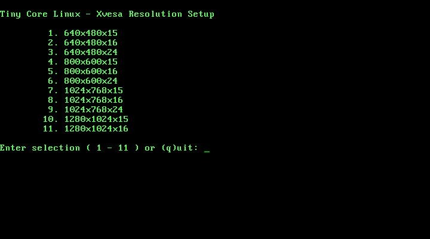
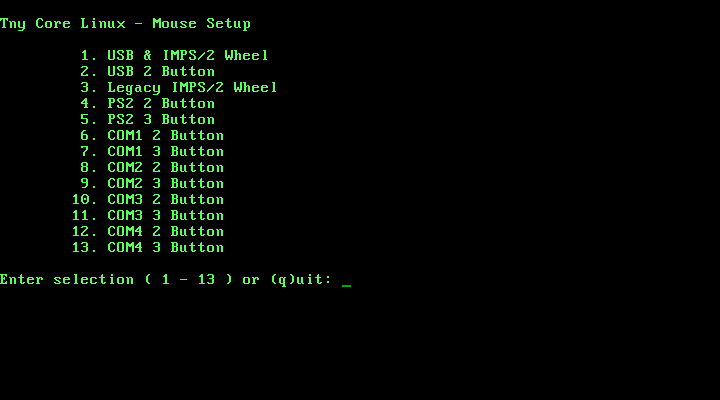

sumix is a 1-CD Linux distribution based on Tiny Core Linux. The objective of this distribution is providing an easy way for trying softwares written by SumiTomohiko.
See the following links;
Visit https://github.com/SumiTomohiko/sumix and click "Downloads" button.
Some PC show you dark screen. To solve this problem, give
tinycore xsetup command when boot.
You will see the list of resolution and color depth. Please tell which your display is.
At the next step, enter the number of your mouse.
Run make at the top directory of sumix source. You
will get sumix.iso.
Building customized sumix needs the five steps.
version.conf.extensions.conf.wallpaper.depmod results in Tiny Core Linux to
modules directory.make.I explain more about the 4th step. Some packages install kernel
modules. In this case, Tiny Core Linux needs to update
/lib/modules/2.6.33.3-tinycore/modules.dep etc by
depmod. Installing extensions into Tiny Core Linux does
this automatically, but sumix building framework cannot do this.
Because there are two problems if you build sumix in Ubuntu (this is
the case of the author).
First of all, depmod in Ubuntu Linux 8.04 cannot
handle compressed modules that are used in Tiny Core Linux (for
example, soundcore.ko.gz in
/lib/modules/2.6.33.3-tinycore/kernel.tclocal/sound).
The second reason is a symbolic link. Tiny Core Linux uses the
symbolic link at
/lib/modules/2.6.33.3-tinycore/kernel.tclocal. That
indicates
/usr/local/lib/modules/2.6.33.3-tinycore/kernel, but this
doesn't exist in Ubuntu (of course). So even depmod with
-b option (that tells depmod where the root
directory is) cannot search all modules.
For the above two reasons, when extensions have modules, you must
boot Tiny Core Linux, install these extensions, and copy all files in
/lib/modules/2.6.33.3-tinycore to modules
directory of sumix building framework.